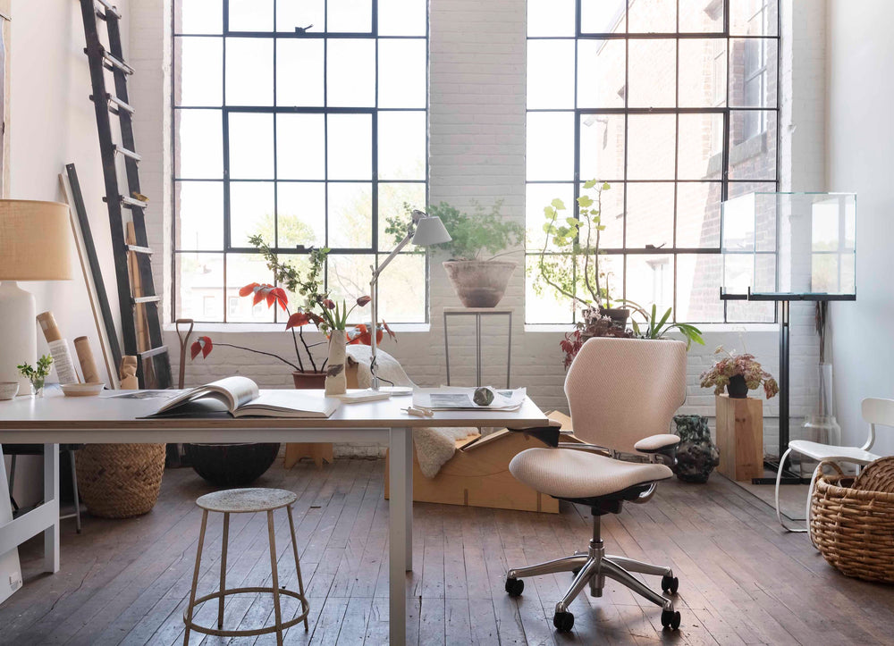

THE HUMAN SIDE OF DESIGNDESIGNED AROUND YOU
좋은 공간은,
사람의 치수에서
시작됩니다.
보기 좋은 가구를 넘어,
몸에 맞는 가구를 선택하는 일.
신체 정보를 입력하고 좌면과 작업면의 치수를 살펴보세요. IKEA의 합리적인 가격과 공식 제품 사양을 비교하며, 당신의 공간에 필요한 기준을 찾아갑니다.
나의 공간 설계하기 ↗01 / THE FIT PLANNER
당신의 몸을,
공간의 기준으로.
간단한 신체 정보에서 시작하세요.
실측값을 더하면 치수를 더 구체적으로 검토할 수 있습니다.
01 USER PROFILE
누구를 위한 공간인가요?
사용자의 신체 조건을 입력해 주세요.
02 YOUR WORKSPACE
키 기반 예시 추정SEATED WORKSTATION · SIDE VIEW
라운지의 기대는 자세는 업무 자세와 다릅니다.
일률적인 권장 치수 대신 제품 사양과 착석 확인 항목을 제공합니다.
일률적인 권장 치수 대신 제품 사양과 착석 확인 항목을 제공합니다.
나에게 맞는 치수 가이드
175 cm · 성인01 / 좌면 높이420–455mm
발이 바닥에 편안히 닿도록
02 / 좌면 깊이450–490mm
무릎 뒤와 좌면 사이에 여유
03 / 작업면 높이665–700mm
어깨에 힘을 빼고 팔꿈치 기준
ⓘ 키만으로 계산한 검증 전 예시 범위입니다. 실측값을 입력해 검토하세요.
사람의 치수에서, 공간의 기준으로.
02 / THE COLLECTION
THE RIGHT PIECES.
당신에게 맞는 선택.
IKEA 한국 제품의 치수와 가격을 나란히 비교해 보세요.
IKEA 한국 공식 페이지에서 수집한 목록 · 전체 재고 목록이 아닙니다. 제품별 확인일은 카드에 표시됩니다. · 가격은 배송·조립비 제외 · 실시간 재고는 공식 판매처에서 확인하세요.
치수 겹침은 해당 항목의 비교 결과이며, 전체적인 착석 적합성을 보장하지 않습니다.
F.
FORM FOLLOWS PEOPLE.
가구보다 먼저, 사람을 생각합니다.
작은 치수의 차이가 더 편안한 하루를 만듭니다.